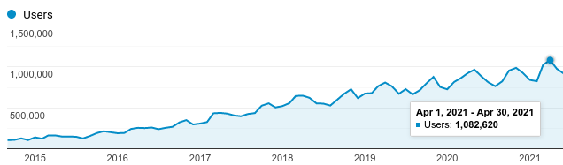
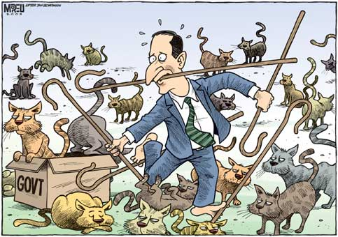
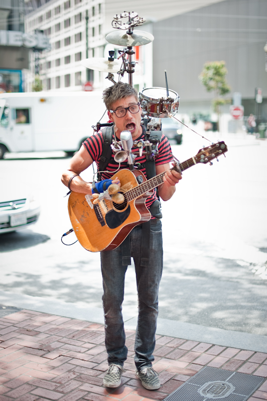

Note
With the growth of scikit-learn and the wider PyData ecosystem, we want to recruit in the Inria scikit-learn team for a new role. Departing from our usual focus on excellence in algorithms, statistics, or code, we want to add to the team someone with some technical understanding, but an eye for people dynamics. Are you passionate about developing open-source communities for data science? This job is a unique opportunity.
The mandate will be on the one hand to develop the wider community behind scikit-learn, on the other hand to foster the foundation’s partnerships, as this is our funding.
Context: Scikit-learn @ Inria foundation
The growth of Scikit-learn
Scikit-learn is used massively, from schools to major companies. It underpins business-intelligence analysis or automates processes. Its reliability is crucial for the enterprise. Its well-documented methods help data-scientists run to valid analyses.
Scikit-learn has hugely grown and is still growing in terms of userbase and expectation of quality. These days, the development team is large, with many grass-root volunteering and some contributors spending a sizeable fraction of their work time.

Number of monthly website access
Scikit-learn @ Inria foundation
Birth of a foundation To ensure reliable funding to a small core of scikit-learn developers, we set up a foundation [1] a few years ago. The goal was to make sure that we did not lose our experienced developers.
| [1] | See the motivating announcement and the website. |
Achieving sustainability The resulting structure is set up to provide a career path to a few of our core people. As a consequence, it is a French legal entity, acting as an employer, funded via sponsorship agreement with a few of major economic users of scikit-learn (check out the list of our sponsors). The priorities of the team are set jointly between the sponsors and the open-source community. The setup is not without flaws, in particular it forces us to employ people on Campus, but it enables giving proper benefits to these contributors.
The team The scikit-learn team at Inria foundation currently comprises 4 very experienced developers. In addition, we have other sources of funding –research projects, the scikit-learn MOOC – that we use to create a larger team (currently 3 full-time positions). Finally, various researchers on campus are heavily invested in scikit-learn or related projects such as joblib. As a result, the amount of technical skills is staggering.
Long story short, we want to add new DNA to this awesome team: someone into peopleware as much as software.
Mandate
The goal of the new position is to talk both to our wider open-source world and our corporate partners. Both are crucial to fostering growth for scikit-learn.
The official job posting doesn’t convey as well as I would like what is behind this position. I’m probably to blame :).
Growing our open-source community
As both the scikit-learn and the PyData community have grown, communication becomes a bottleneck. There are so many little things to make an open-source community productive: facilitating on-boarding, dividing efficiently the workload, documenting well the decision making, organizing fun sprints, making sure that issue triaging is efficient…
We are looking for someone passionate about open-source communities and who wants to be herding such cats.
Increasing our corporate visibility
Scikit-learn is one of the most used data-science tools. However, talking to senior decision makers, their perception sometimes differs. Indeed, we are competing for visibility with many powerful actors.
We must communicate beyond the open-source world to develop a strong brand for scikit-learn. Good communication will help us find new sponsors, a key ingredient of growth and sustainability for scikit-learn.
We need to communicate on our progresses and our actions, as people are often surprised by the breadth of our contributions [2].
| [2] | for instance, the foundation team has contributed improvements in CPython itself , maintains cloudpickle a central component of the data ecosystem). |
As a foundation, we need to be transparent and accountable, which is harder than it seems.
A good fit
We are looking for someone into open source, but also who likes writing blog posts, social networks, organizing events, presenting scikit-learn, and improving processes.
We believe that such a job is best done by someone who has some technical interest in scikit-learn: good advocacy needs with good understanding.
Maybe this sounds daunting? Few people have all the skills, let alone the experience. We are actually more looking for a passionate and promising candidate, whatever the length of the resume. We believe that talented people can learn, when they like what they do.
This is a job about open-source, for open source! It’s not a perfect job: we have many administrative constraints in running the foundation, we are paying ourselves less than a non-open-source job.
Apply now
We are looking forward to your application. You can submit them on the official job offer